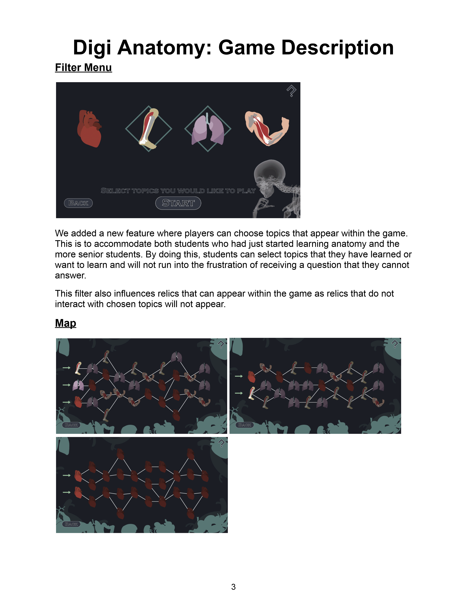

<div id="ajax-page" class="ajax-page-content">
    <div class="ajax-page-wrapper">
        <div class="ajax-page-nav">
            <div class="nav-item ajax-page-prev-next">
                <a class="ajax-page-load" href="project-celeste.html"><i class="lnr lnr-chevron-left"></i></a>
                <a class="ajax-page-load" href="project-infernumb-ost.html"><i class="lnr lnr-chevron-right"></i></a>
            </div>
            <div class="nav-item ajax-page-close-button">
                <a id="ajax-page-close-button" href="#"><i class="lnr lnr-cross"></i></a>
            </div>
        </div>

        <div class="ajax-page-title">
            <h1>DigiAnatomy</h1>
            <p class="ajax-page-subtitle">Game Description | Serious Game for LKCMedicine</p>
        </div>

        <div class="row">
            <div class="col-sm-8 col-md-8 portfolio-block">
                <div class="owl-carousel portfolio-page-carousel">
                    <div class="item">
                        <a class="lightbox" href="img/portfolio/digianatomy/filter-and-map.png" title="Filter Menu and Map"></a>
                        <p class="portfolio-page-caption">Filter Menu and Map</p>
                    </div>
                </div>

                <script type="text/javascript">
                    jQuery(document).ready(function($){
                        $('.portfolio-page-carousel').imagesLoaded(function(){
                            $('.portfolio-page-carousel').owlCarousel({
                                smartSpeed:1200,
                                items: 1,
                                loop: false,
                                dots: true,
                                nav: true,
                                navText: false,
                                margin: 10,
                                autoHeight:true
                            });
                        });
                    });
                </script>

                <!-- About the Project -->
                <div class="project-overview">
                    <div class="block-title">
                        <h3>About the Project</h3>
                    </div>
                    <p class="text-justify">Digi Anatomy is a game based on an older version, Digital Medic, developed by the previous batch of Digital Learning Interns. The target audiences are LKCMedicine Year 1 students that have just started learning Anatomy, to the more senior medical students.</p>
                    <p class="text-justify">We randomised the game map generation so the players can choose what route they take, randomised the questions taken from the question pool and also added relics and other User Interface (UI) elements that will fulfill its purpose of a Serious Game. We also added features such as a Filter Menu to allow topic selections that will accommodate the medical students at different learning stages of anatomy.</p>
                    <p class="text-justify">By having these elements we aim to have the players coming back to the game for more active learning through gamified learning contents.</p>
                </div>
            </div>

            <div class="col-sm-4 col-md-4 portfolio-block">
                <!-- Project Info -->
                <div class="project-description">
                    <div class="block-title">
                        <h3>Project Info</h3>
                    </div>
                    <ul class="project-general-info">
                        <li><p><i class="fa fa-gamepad"></i> Serious game (Unity, WebGL)</p></li>
                        <li><p><i class="fa fa-users"></i> Digital Learning Interns</p></li>
                        <li><p><i class="fa fa-history"></i> Polytechnic-era work</p></li>
                    </ul>

                    <div class="tags-block">
                        <div class="block-title">
                            <h3>Skills &amp; Tools</h3>
                        </div>
                        <ul class="tags">
                            <li><a>Unity</a></li>
                            <li><a>C#</a></li>
                            <li><a>WebGL</a></li>
                            <li><a>Serious Games</a></li>
                            <li><a>Roguelike Design</a></li>
                        </ul>
                    </div>
                    <div class="project-links">
                        <a class="btn-primary" href="files/DigiAnatomy_Description.pdf" target="_blank" rel="noopener"><i class="far fa-file-pdf"></i> Game description (PDF)</a>
                    </div>
                </div>
                <!-- /Project Info -->
            </div>
        </div>
    </div>
</div>